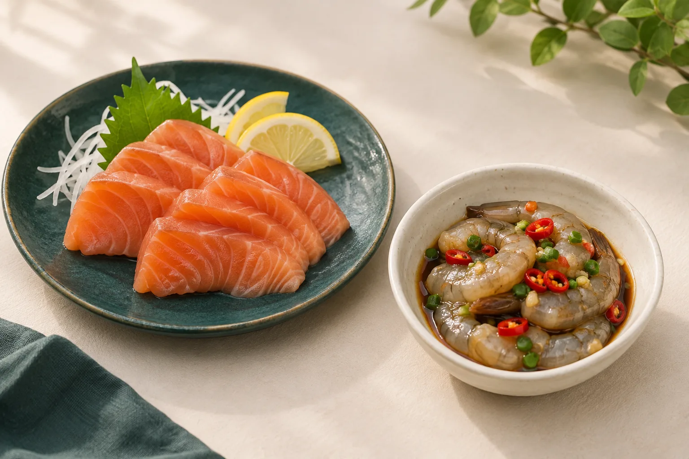
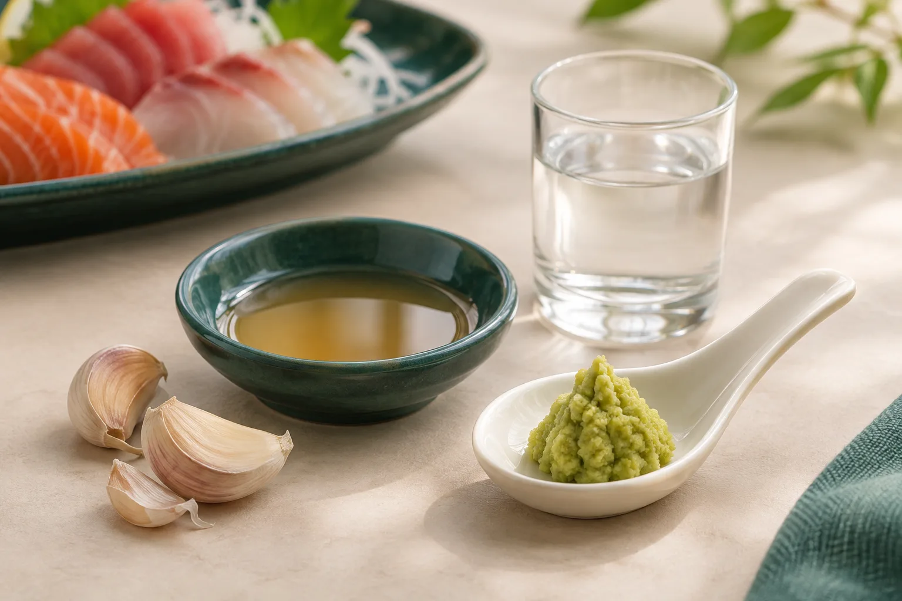
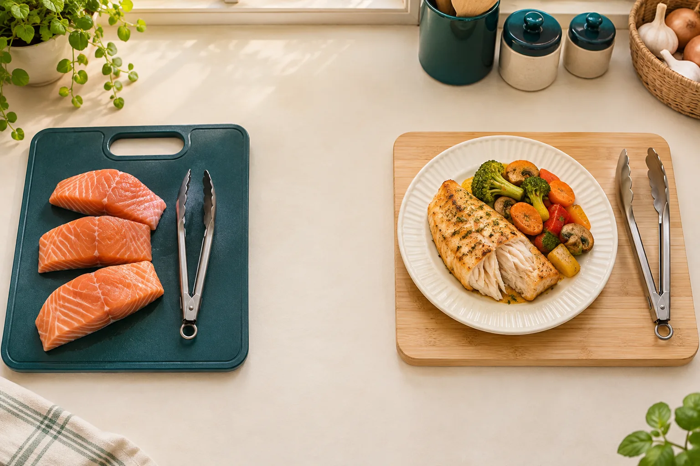

校园生食食品安全科普 · 扩充版
“生”鲜有风险，入口需谨慎｜吃生鱼片、生腌前，先了解这10件事
把 10 个知识点，变成下一餐更稳妥的选择。
进入 10 题知识挑战下课后的聚餐、周末的外卖，生鱼片、生腌虾蟹常常出现在我们的餐桌上。有人觉得“足够新鲜就可以生吃”，有人相信“多蘸芥末、加点白酒就能杀虫”，也有人认为“冷冻过就没有风险”。
这些说法，哪些有科学依据？
生食水产品可能涉及细菌、病毒和寄生虫等风险，具体情况受到食材种类、来源、加工与保存条件影响。了解风险和有效的防护方法，才能让每一次选择更稳妥。
知识点 01
看起来新鲜，不等于没有病原体
颜色漂亮、气味正常、口感鲜甜，并不能证明食物中不存在致病微生物或寄生虫。
“新鲜”与“安全”有关联，却不能互相替代。明显变质的食物不能吃；没有明显异常，也不代表可以放心生吃。消费者很难靠肉眼判断一份生鱼片是否存在生物性危害，更不能用“先尝一口”来检验安全。[1][2]

图片为 AI 生成的情景示意，不对应具体商家或产品。
知识点 02
海水鱼，也可能有寄生虫
“淡水鱼有寄生虫，海水鱼没有”，是常见误区。
部分淡水鱼可能携带中华肝吸虫，部分海鱼及其他海产也可能携带异尖线虫等寄生虫。风险与鱼种、生长环境、饲料及后续处理有关，不能仅凭“海水鱼”“人工养殖”或“进口”等描述，就认定没有风险。[2]
这不意味着每一份生鱼片都有寄生虫，而是提醒我们：食品类别和宣传标签，不能代替具体的风险控制。
知识点 03
白酒、醋和芥末，不能当作消毒工具
生腌中的酒、醋、蒜、辣椒可以改变风味，蘸芥末也能增加口感，但日常调味和短时间腌制不能替代可靠的杀菌杀虫措施。[1][5]
判断食物是否经过有效处理，不能只看“酒味够不够浓”“腌得够不够入味”。吃的时候喝酒，也不能作为预防寄生虫感染的方法。
记住一句话：腌入味，不等于做熟；吃起来刺激，不等于处理得安全。

图片为 AI 生成的情景示意，不对应具体商家或产品。
知识点 04
冷冻有作用，但不是万能保护
针对鱼类寄生虫，满足特定温度与持续时间条件的冷冻，可以发挥控制作用。但是否有效，需要考虑原料和处理工艺。[2]
“放进家用冰箱冻了一晚”，不能直接等同于完成规范的寄生虫控制。更重要的是，冷冻不能杀灭所有有害病原体，因此，冻过不等于无菌，也不等于消除了全部风险。[3]
不要把专业加工条件简化成通用于所有水产品的家庭生食“安全配方”。
知识点 05
生熟分开，要分到刀具、容器和夹子
生食风险不仅发生在“吃下生食”的那一刻。
处理生鱼后继续用同一把刀切熟食，夹过生虾的夹子直接夹熟食，或者让生食汁液滴到即食食品上，都可能造成交叉污染。
准备食物时，应将生食与熟食、即食食品分开处理和存放，使用不同的刀具、砧板、容器及夹具。处理完生食，还要清洁双手和操作区域。[3][4][6]
食物已经做熟，也要避免再次接触生食污染。

图片为 AI 生成的情景示意，不对应具体商家或产品。
知识点 06
外卖到手后，保存条件同样重要
购买食品时，除了口味和价格，也要关注来源、包装完整性、保存要求及经营卫生。
需要冷藏的食品，应按标签或商家的保存要求及时冷藏。聚餐、外卖和野餐时，尽量减少易腐食品在常温下停留的时间；不要买回来后一直放在桌上，等想吃时再处理。[3]
冰箱有助于保存食物，但不能让食品无限期存放，也不能把已经受到污染或储存不当的食品“恢复安全”。保存与运输，是食品安全的一部分。[3][6]
知识点 07
解冻，也要讲方法
准备把冷冻水产做熟时，解冻方式同样需要注意。
可以提前安排时间，让食材在冰箱冷藏室内逐渐解冻，并用容器接住汁液，避免污染其他食品。不要习惯性地把水产放在室温下长时间等待解冻。[3][6]
如果采用微波炉解冻，应按设备说明操作，并在解冻后立即烹调。[3]
还要分清两个概念：解冻是为了后续加工，不能把食材“解冻完成”理解成“适合直接生吃”。
知识点 08
充分加热，比追求“半生口感”更稳妥
对于生食水产的生物性风险，优先选择充分加热的食品，是更稳妥的做法。[1][3]
烹调时要让食物内部也得到充分加热，不能只看表面变色，就认定整份食物已经熟透。厚切食材、大块食材以及只经过短暂焯烫的水产，尤其需要留意。
知识点 09
有些人，更应避免生或未熟水产
孕妇、儿童、老年人和免疫力较弱者，更容易受到食源性疾病影响，应避免食用生或未充分加热的鱼类、贝类等水产。[3]
与家人、朋友一起点餐时，可以主动考虑这些差异，准备充分加热的选择。
“以前吃过没事”不能保证下一次也没有风险；不同人的健康状况和易感程度也不相同。
知识点 10
吃后不舒服，及时求助并说明饮食情况
如果食用后出现腹痛、腹泻、呕吐等不适，怀疑与食物有关，应及时寻求医疗帮助，并向医务人员说明近期吃过哪些食物、食用时间以及症状变化。[3]
不要仅凭“刚吃过生鱼片”就自行判断一定是寄生虫感染。多种原因都可能导致类似症状，具体判断需要专业评估。
同样，一次没有出现不适，也不能用来证明某种吃法长期安全。
把提醒带进下一次点餐
下一次和同学一起吃饭，可以从这些小事开始：
- 优先选择充分加热的水产。
- 不把酒、醋、芥末当作可靠的杀菌杀虫措施。
- 不把“新鲜”“海水鱼”“冷冻过”当作安全保证。
- 生熟分开，保持双手、用具和操作环境清洁。
- 关注购买、保存、解冻和烹调的每个环节。
水产品可以是日常膳食的一部分，科学认识生食风险，也能帮助我们更安心地享受食物。
“生”鲜有风险，入口需谨慎。让更稳妥的选择，从下一餐开始。
本文为一般食品安全科普，不代表对某一商家、品牌、批次或具体产品的检测结论，也不能代替个体化诊疗。
参考资料
- [1] 香港食物安全中心未煮熟的水产——病原体和寄生虫的温床2016年5月，第118期
- [2] 香港食物安全中心供生吃鱼类中的寄生虫2016年10月，第123期
- [3] 美国食品药品监督管理局（FDA）Selecting and Serving Fresh and Frozen Seafood Safely网页；访问于2026年11月21日
- [4] 世界卫生组织（WHO）世界食品安全日2024：行动呼吁消费者食品安全五大要点
- [5] 台湾食品药物管理署听说吃生鱼片时喝高度白酒、蘸芥末、嚼大蒜等，可以杀寄生虫，这是真的吗？2021年1月5日发布，2025年9月3日维护
- [6] 香港食物安全中心食物安全五要点网页；访问于2026年11月21日
资料核对日期：2026年11月21日。